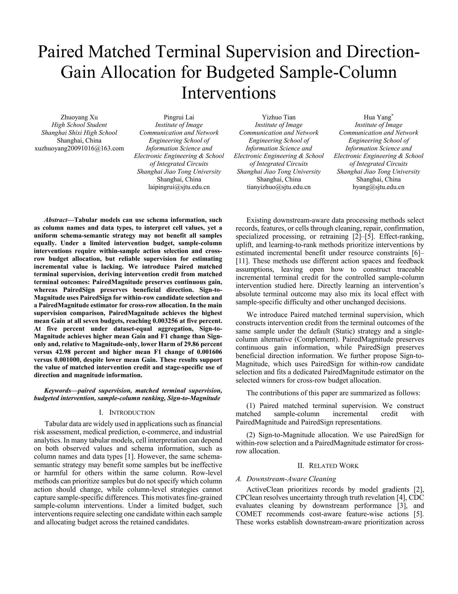
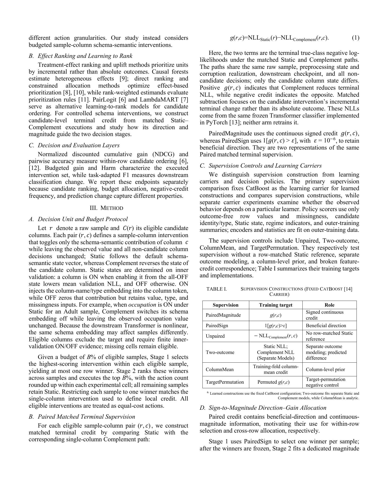
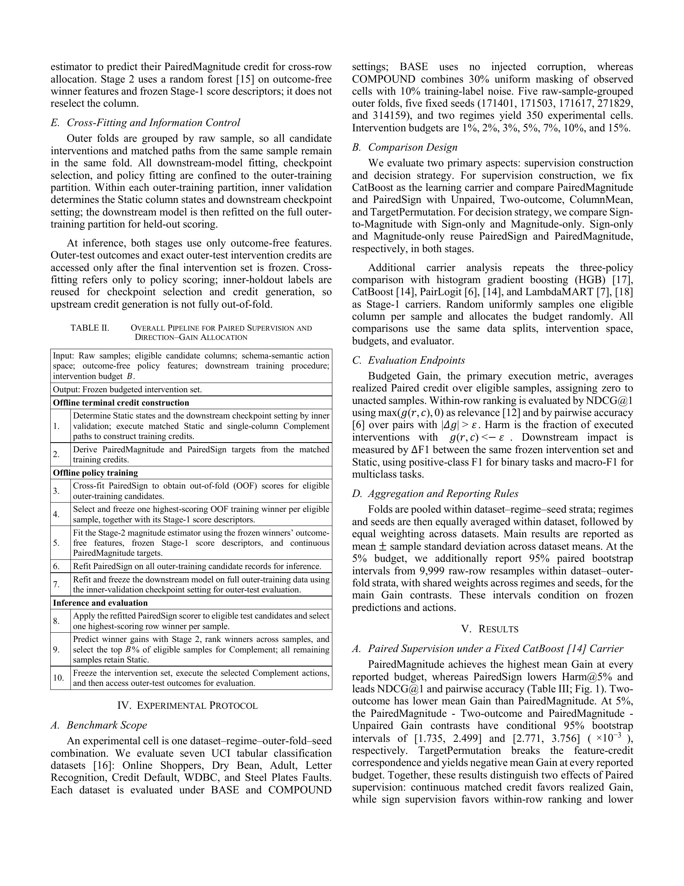
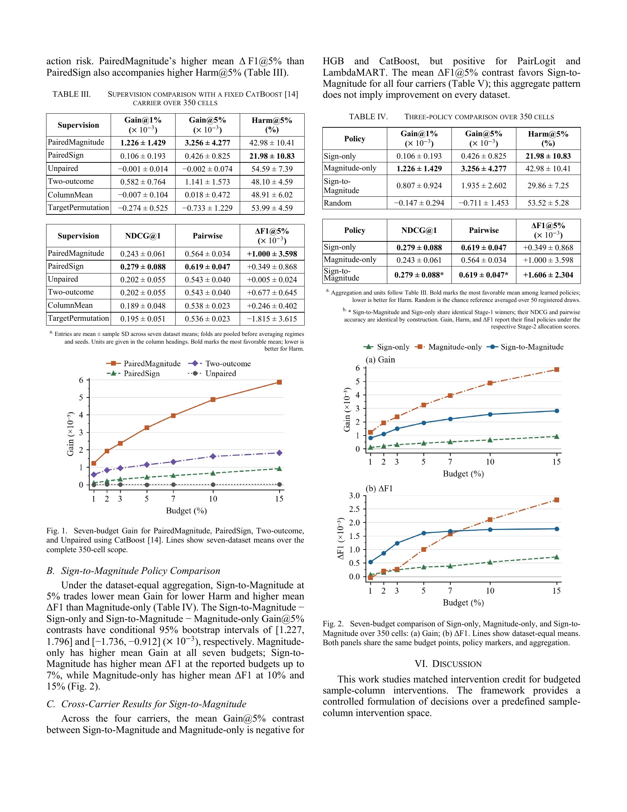
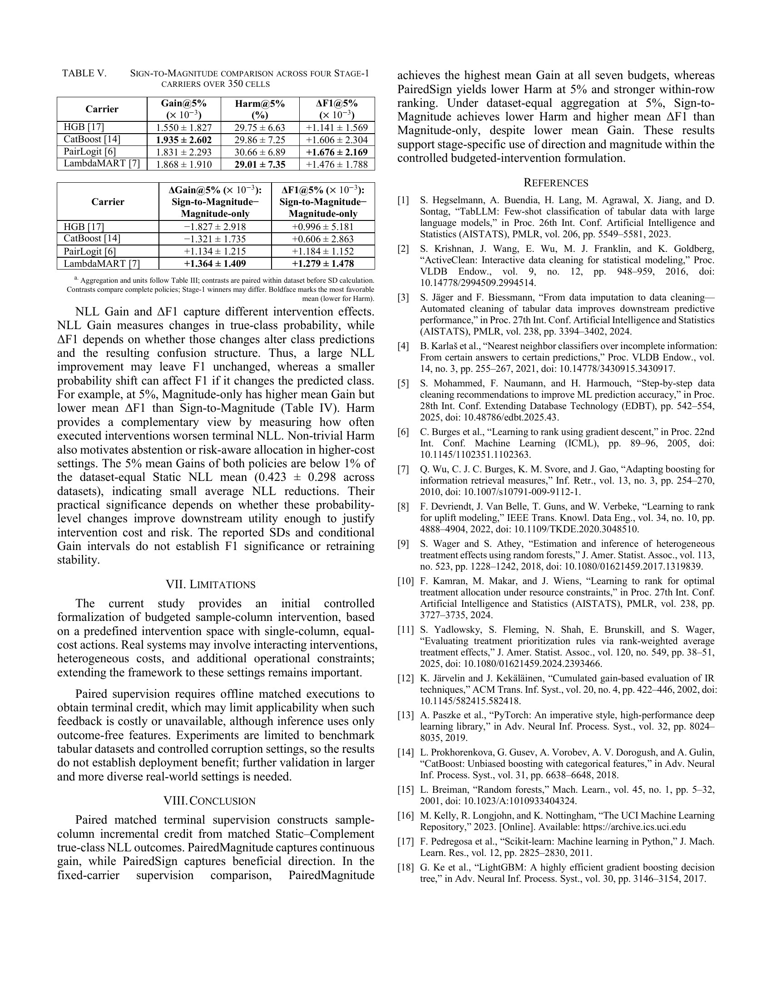

Paired Matched Terminal Supervision and Direction-Gain Allocation for Budgeted Sample-Column Interventions
1 Shanghai Shixi High School, Shanghai, China
2 Shanghai Jiao Tong University, Shanghai, China
* Corresponding author
Abstract
Tabular models can use schema information, such as column names and data types, to interpret cell values, yet a uniform schema-semantic strategy may not benefit all samples equally. Under a limited intervention budget, sample-column interventions require within-sample action selection and cross-row budget allocation, but reliable supervision for estimating incremental value is lacking. We introduce Paired matched terminal supervision, deriving intervention credit from matched terminal outcomes: PairedMagnitude preserves continuous gain, whereas PairedSign preserves beneficial direction. Sign-to-Magnitude uses PairedSign for within-row candidate selection and a PairedMagnitude estimator for cross-row allocation. In the main supervision comparison, PairedMagnitude achieves the highest mean Gain at all seven budgets, reaching 0.003256 at five percent. At five percent under dataset-equal aggregation, Sign-to-Magnitude achieves higher mean Gain and F1 change than Sign-only and, relative to Magnitude-only, lower Harm of 29.86 percent versus 42.98 percent and higher mean F1 change of 0.001606 versus 0.001000, despite lower mean Gain. These results support the value of matched intervention credit and stage-specific use of direction and magnitude information.
Keywords: paired supervision, matched terminal supervision, budgeted intervention, sample-column ranking, Sign-to-Magnitude
Conference Poster

Full Paper




